Aferições em baterias
Alicate amperímetro
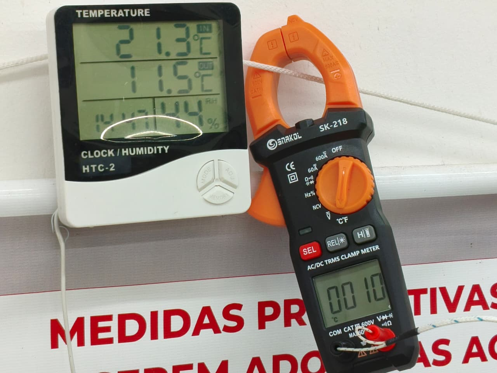
aferição de temperatura
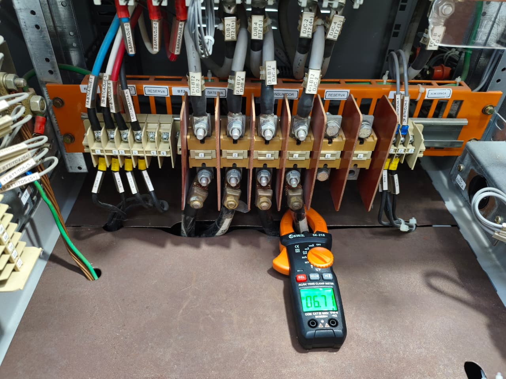
aferição de corrente CC
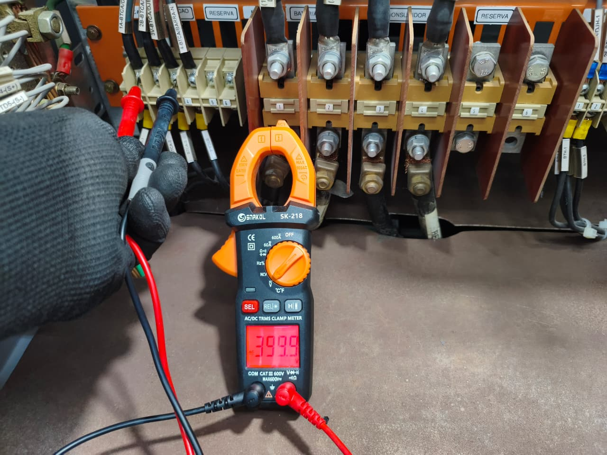
aferição de tensão CA
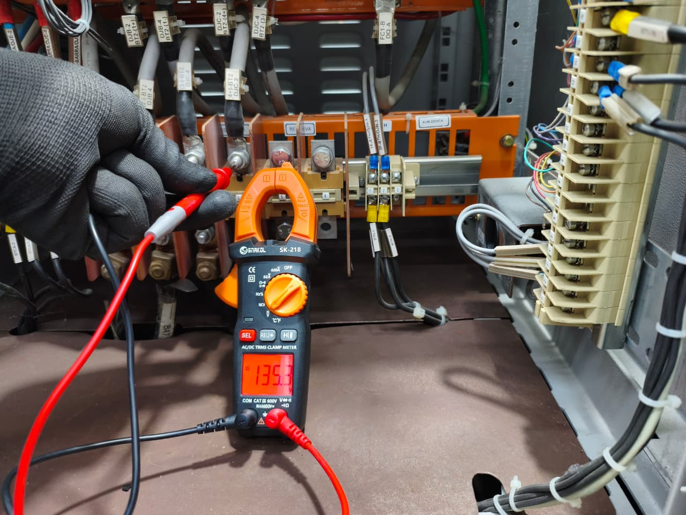
aferição de tensão CC
Torquímetro
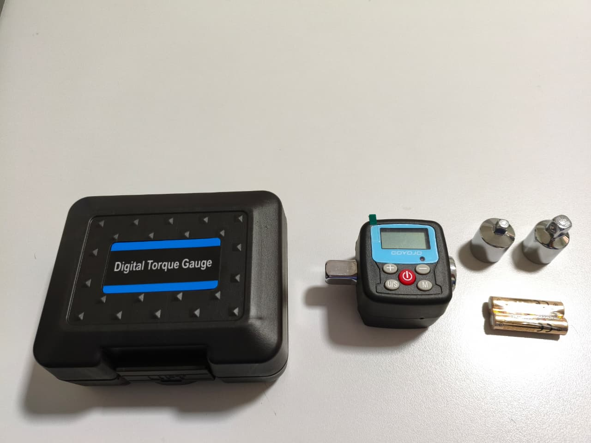
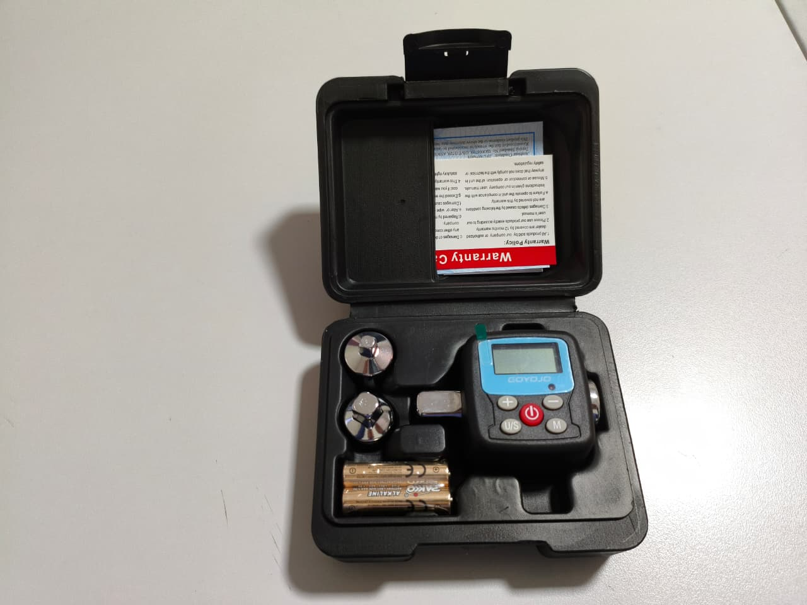
Medidor de bateria (Tensão e resistência)
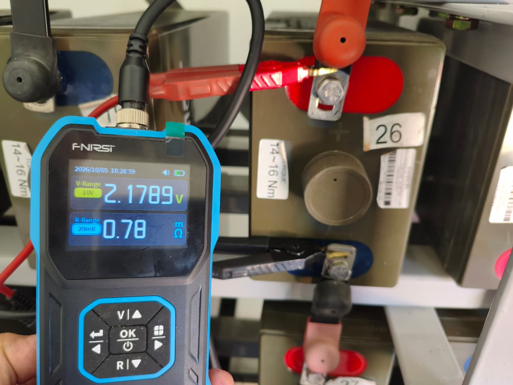
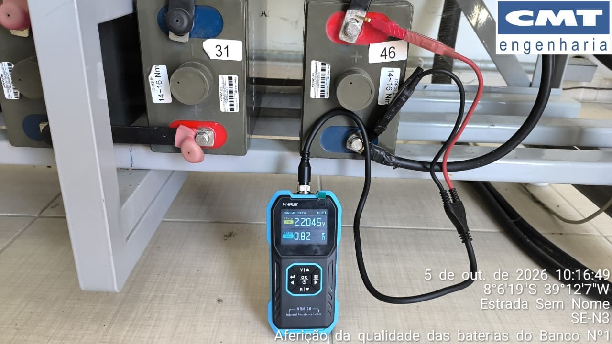
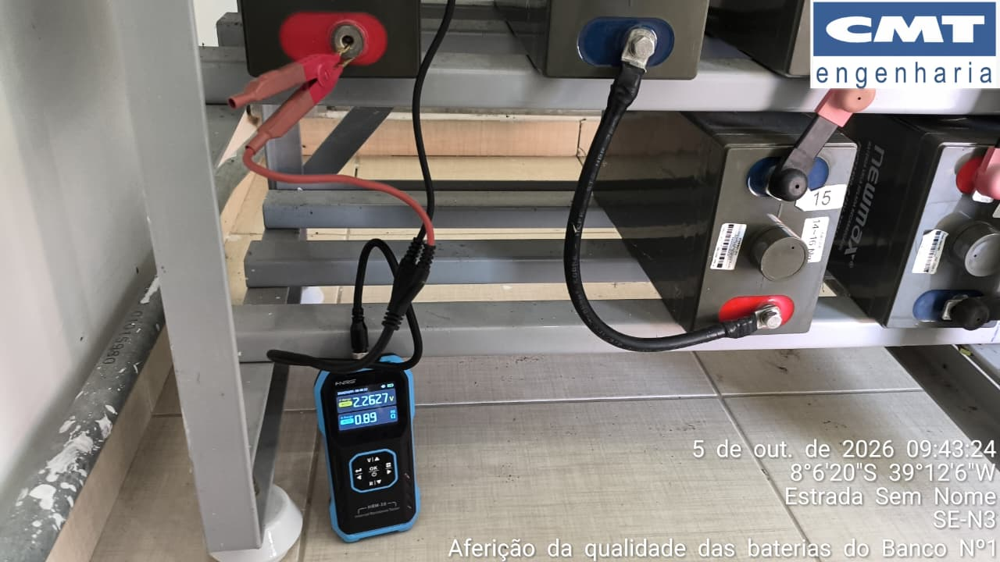
Bateria do GMG
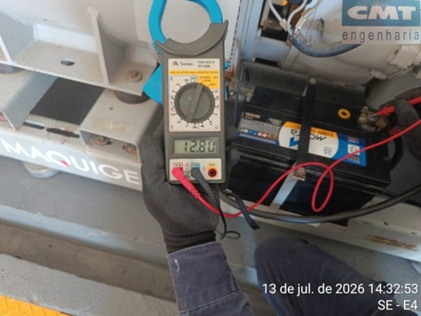
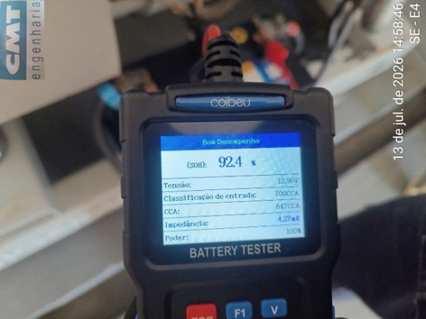
Baterias dos bancos
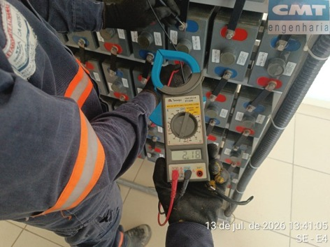
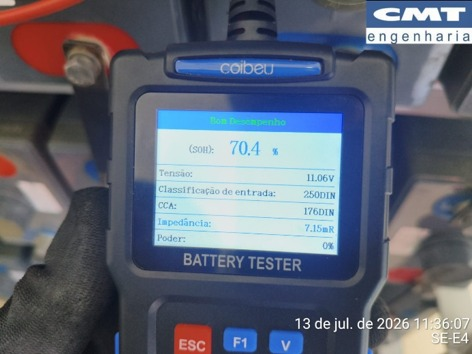